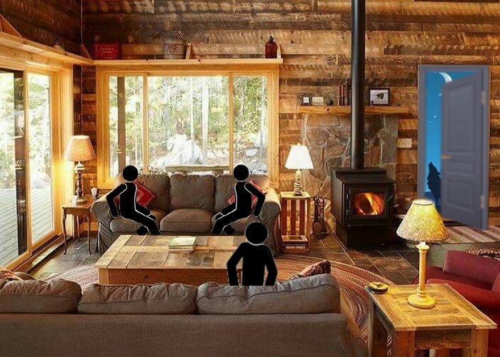

Processing
Para realizar este trabalho, utilizamos a plataforma Processing. Fizemos um jogo de escolhas,
onde o jogador escolhia qual seria o destino dos personagens.
O objetivo do trabalho era utilizar as um conjunto de bibliotecas para criar um jogo ou um
projeto múlti mídia com interação com musica.
Aqui esta uma foto do começo do trabalho:
